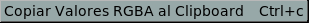

El Menú de Pixel

El menú de Pixel permite copiar los valores RGBA del pixel RGBA bajo el cursor (donde el borde superior izquierdo de este submenú normalmente aparece) al clipboard. Usted puede luego pegar los valores en otra aplicación o ventana.